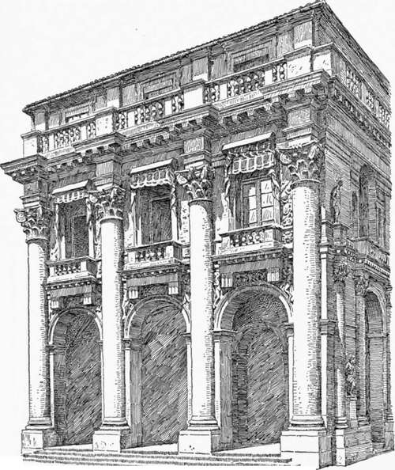
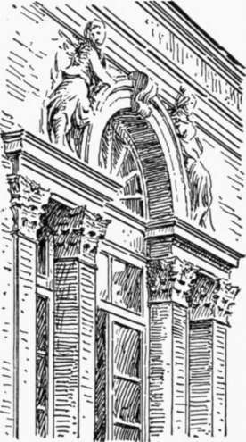
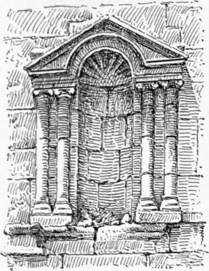
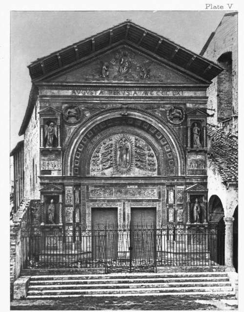

Palace Architecture Of The Roman Renaissance. Part 6
Description
This section is from the book "Character Of Renaissance Architecture", by Charles Herbert Moore. Also available from Amazon: Character of Renaissance Architecture.
Palace Architecture Of The Roman Renaissance. Part 6
From a structural point of view Palladio's scheme is an improvement on that of Padua. For in Padua, as in Vicenza, both stories of the portico are vaulted, and the slender columns which alone bear the vaulting are too weak to withstand the thrusts of this vaulting, and thus both transverse and longitudinal tie-rods are inserted to maintain the stability of the fabric. But Palladio's massive and heavily weighted piers are strong enough to bear the thrusts without the aid of ties, and it may be added that the great orders have more function here than they usually have in Renaissance design, since their columns act somewhat as buttresses. The shaft of an order has not, indeed, a proper form for an abutment, and has no buttress expression. Its resistance to thrust is slight, but it is better than nothing at all. Following Sansovino, the architect has introduced a balustrade in each opening of the arcade, and a continuous one as a crowning feature of the cornice.
Palladio himself thought well of this work, and he does not hesitate to say in his book that it will bear comparison with the most beautiful buildings of antiquity. He tells us, also, that it is constructed in the best manner out of excellent rut stone.1
1 " Non dubito che questa fabrica non possa esser comparata a gli edifici antichi e annoverata tra le maggiori, e le piu belle fabriche che siano state fatte da gli antichi in qua, si per la grandezza, e per gli ornamenti suoi, come anco per la materia, che e tutta di pietra viva durisima, e sono state tutte le pietre commesse e legate insieme con somma diligenza." Op. cit., bk. 3, p. 41.
The last remark is significant, for genuine stone masonry was not always employed by Palladio in buildings which had the appearance of stone construction. The use of brick and rubble with a revetment of stucco had not been uncommon with the builders of the early Renaissance, and such materials were extensively employed even by Bramante and Michael Angelo. But Palladio went further than his predecessors in the creation of architectural shams.
Palladio was an earnest devotee of his art as he understood it, but he had what may be called a theatrical ideal of architecture. The superficial appearance was what chiefly concerned him. He had great versatility in scenic and structurally meaningless composition, and his numerous palace fronts in Vicenza are remarkable for their superficially varied character. The Palazzo Valmarana, with its colossal pilasters on a high podium overlapping a lesser order embracing the basement and mezzanine, while the great entablature is broken into ressauts over the pilasters ; the Palazzo Colleone-Porta, with its basement wall rusticated over a plain dado and an Ionic order on the face of the superstructure ; the Palazzo Porta-Barbarano, with its superimposed orders and elaborate ornamentation in stucco relief; and the Loggia Bernarda, with its gigantic composite order and balcony corbels in the form of Doric triglyphs (Fig. 75), are sufficient illustrations of this. The skin of stucco with which many of these buildings were originally covered has broken off in many places, revealing the poor materials of which they are built.
Fig. 75. — Loggia Bernarda.
Palladio's compositions are, indeed, based on order and symmetry, but order and symmetry of a mechanical kind. On these and other kindred qualities grammarians in art are prone to lay great stress, but unless accompanied by many others, which for the most part elude all human powers of analysis and description, though they are instinctively grasped by the true artist and appreciated by the discerning and sympathetic beholder, they have little value. Palladio and his associates were not true artists, they were grammatical formalists without the inspiration of genius.1 As for Scamozzi, little need be said.
1 They were grammatical, not in the sense of using the classic orders with correctness,— this, as we have seen, they did not do, — but in the sense of arranging their architectural details, such as they were, on a basis of grammatical order.
Fig. 76. — Window of Palazzo Branzo.
Milizia tells us that he studied architecture with his father, but that his real masters were the monuments of art themselves\ and that, stimulated by the fame of Sansovino and Palladio, he observed their compositions closely, and conceived the ambition to surpass them. His works, which do not differ materially from those of these masters, present no features that are worthy of special remark, unless a peculiar form of compound window, which occurs in the Palazzo Branzo in Vicenza, be an exception. In this composition, often reproduced in the later Renaissance architecture of alL countries, two narrow square-headed openings, each crowned with an entablature, flank a wider one spanned by an arch (Fig. 76). This composition has been called an invention of Scamozzi's.1 But there had been many previous instances of its most noticeable feature, i.e. the entablature broken by an arch, as in the porch of the Pazzi by Brunelleschi. I do not know that windows had before been designed in this form in the architecture of the Renaissance ; but the same composition occurs in the Roman architecture of Syria, as in the Basilica of Shakka (Fig. 77).
Fig. 77. — Basilica of Shakka.
We have thus far confined our attention to the architecture of the Renaissance as it was developed under the Florentine and Roman influences, early and late. We must now notice some of the phases which the art assumed under other local influences that were subordinately active, chiefly in the north of Italy.
1 Sir William Chambers, in his Treatise on the Decorative Part of Civil Architecture, London, 1791, p. 121, referring to this form of opening, says, " It is an invention of Scamozzi's."
Plate V
San Bernardino Perugia
Continue to:
- prev: Palace Architecture Of The Roman Renaissance. Part 5
- Table of Contents
- next: Chapter VIII. Church Architecture Of The Renaissance In North Italy